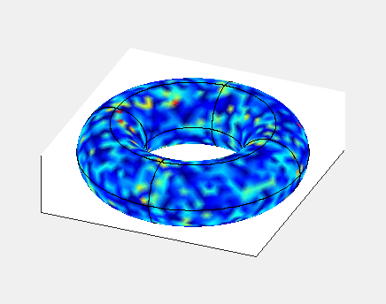

URDME simulating Turing patterns

The above animation displays the dynamics until approximate
equilibirum of the Schnakenberg model, a model which
develops Turing
patterns. Here spots of the morphogen are seen to be developed; in
the formulation above the reaction-diffusion system is interpreted in
a stochastic sense and the noise is seen to cause the pattern to
fluctuate somewhat at the end of the simulation.
References
The numerical method employed in the simulation was described
in S. Engblom, L. Ferm, A. Hellander, Lötstedt: Simulation
of Stochastic Reaction-Diffusion Processes on Unstructured
Meshes , in SIAM J. Sci. Comput. 31(3):1774--1797,
2009: (doi).
The URDME software was further discussed in B. Drawert,
S. Engblom, and A. Hellander: URDME: a modular framework for
stochastic simulation of reaction-transport processes in complex
geometries in BMC Syst. Biol. 6(76):1--17,
2012: (doi).
The Schnakenberg and other models were implemented and solved
in URDME
in Y. Saygun: Computational
Stochastic Morphogenesis, Master's thesis, 2015.
Stefan Engblom
Last modified: Fri Sep 6 14:47:42 CEST 2024